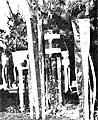
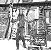

THE Mother Earth News , P.O. Box 70, Hendersonville, N.C. 28791
It you now operate, or have ever operated, a successful home business that was inspired by an article you read in MOTHER, tell us (in about 500 words) when and where-and with how much "seed money"-you started your venture Because if your story can be fitted into an upcoming installment of BOOTSTRAP BUSINESSES you'll receive [1] the warm satisfaction of knowing that you helped someone else find the happiness you enjoy and [2] a free two year new or renewal subscription to THE Mother Earth News (restricted)
After we bought our home, it didn't take us long to find out that we were hard pressed to stretch our income tar enough to meet the payrnents. so I looked for a method of turning some of my hours as "domestic engineer" into ready cash. Since I've always loved needlework, I reread "it Pays to Be an Old Sew-and-Sew" (MOTHER NO. 48, page 64) and came up with an exciting way to put my talent to use.
For $8.00 I bought four pounds of brightly colored scraps of ripstop nylon from a satlmaker (believe me, It was quite an armload!). Then I laid out $5.00 more at the local fabric shop to stock up on thread, frame material, hooks, and such . . . and headed home to concoct some vivid and fascinating items that are a kind of cross between toys and objects d'art.
Here in tire Northwest, where gray is an all too common outdoor hue, colorful windsocks-to hang on the porch or in the yard-have become quite popular. And I discovered that in less than 90 minutes I could make one, of durable nylon, that would be light enough to move in the slightest breeze.
My first sparkling zephyr-grabber went up on the corner of out own house, where it looks good and provides me with free advertising. During the next three weeks I sold four of the socks at $15 each (half the price of the store bought versions). I've since gone on to fabricate the wind indicators in a variety of colors and shapes so that customers will have a choice. My current models are priced at $9.00 and $16, depending on size, and I'm kept quite busy filling orders In three months I've been able to make and sell $200 worth of windsocks, at a cost to me of just $1.00 each.
The extra cash is very useful, of course ... and besides. I feel really good about helping to brighten up the countryside. If you're interested tit adding a touch of color to your property, mail me a long self-addressed, stamped envelope . . . and I'll send you an information sheet and order blank.
Paula Fair
Wizard Windsocks
Dept. TMEN
5303 159th N.E.
Redmond, Wash. 98052
When my husband Eric had to spend six months recovering from a near-fatal head injury he'd sustained at his job, I began to dream of having a business of our own that we could run together from our home in the caribou country of British Columbia.
Inspired, I scanned my issues of MOTHER and found two ideas that seemed to suit our situation. "Cook Up Some Cash for Christmas" (issue 60, page 175) and "Spin Wool With a Potter's Wheel" (issue 61, page 184) were both right on target. I already owned a spinning wheel, and (if I do say so) I'm quite skilled at spinning wool, dog fur, and angora goat hair. What's more, I'd acquired a fair local reputation as a cook, largely because of my whole wheat bread (made with home ground flour) and fresh apple pies. And besides that, we had a dilapidated log cabin on our property that I figured could be called into use as a shop.
We spent $600, and harvested a lot of logs from our woods, while shoring up the old building. Another $1,000 went for spinning wheels, wool, craft items, and gifts to stock the shelves while I whipped up a supply of homebaked goods. In May of 1980 the Log Cabin Boutique opened for business.
But we worried whether we would have any business. The idea had been a gamble from the beginning, since we live 40 miles from the nearest town and half a mile from the main road. However, we are in the middle of a fishing and resort area, so we put a sign up on the highway to draw passersby . . . and crossed our fingers.
And you know, the gamble paid off. We were soon netting $600 to $900 a month and during our first season (May through September) we grossed half as much as Eric normally made by working all year. We've since built a 20' X 30' addition to the shop, and we're now conducting spinning, dyeing, and weaving classes to augment the sale of our other offerings.
The answer to our dream of independence turned out to be right in our own back yard.
Glenna Metchette
Lone Butte, B.C., Canada
While working as a biofeedback therapist. I was glad to be able to help many people learn to deal more effectively with stress. When it came time for me to leave my counseling job for graduate school, though, I became quite stressed myself. . . trying to figure out how my family would pay the bills without the help of my income.
That worry turned to enthusiasm, however, when I came up with an idea for a bootstrap business. I discovered that Dr. Tom Ferguson's Medical Self-Care columns in MOTHER expressed the same attitudes about helping others participate in their own physical and mental well-being that I've always tried to use in my work. Furthermore, the Bootstrap Businesses feature, which I read in every issue, gave me the Idea of marketing my health care skills in a new way. Why not-I thought-put what I'd learned through years of biofeedback training, stress management education/consultation, hypnosis, and counseling into a practical format for others to use.
Well, since that plan took shape in my mind. I've written a booklet entitled A Guide to Learning DeepRelaxation, a workbook called Learn to Control Stress, and several papers on the causes and control of tension and migraine headaches. In addition. I developed a series of cassette tapes that systematically teach relaxation skills, and others designed to help people learn to control pain with self-hypnosis.
My initial costs involved more time than actual cash outlay. I paid $57 for printing and tapes, but I was able to barter a set of the finished materials for all of the necessary typing. Then I spent $44 to place an ad in a small wholistic health magazine which, unfortunately, netted me only $39 in sales.
Subsequent courses of action have proved more effective though. I often speak about stress at churches and club meetings, and give public service interviews to newspapers and on radio and TV... and I find that these presentations bring me the kind of credibility I need I've received quite a few orders simply by mentioning, during a demonstration, that I have tapes and booklets for sale.
If any of MOM's readers are interested in further information about the materials I have available, they can simply send me a self addressed stamped envelope.
Jim Kreiden
Dept TMEN
1603 W Eighth Terr., Apt. 1
Lawrence. Kan 66044
A few years ago my husband and I had just decided to take a crack at crafting stick furniture . . when lo and behold, an article on that very subject appeared in THE Mother Earth News(restricted) (" I Build Willow Chairs for Pleasure and Profit!" No. 43. page 72)
Since we don't take coincidences lightly, my spouse and I decided we were on the right track Between MOM's article (which discussed the construction of a sort, of California beach type chair) and a few broken-down pieces of old gypsy-made furniture we'd bought at junk sales, we thought we had the basis for reviving one of the almost lost arts of those wanderers. And we were convinced that if the technique was good enough for the gypsies and for MOTHER, it was good enough for us.
After a bit of experimentation we came up with a handsome crossbreed that was sturdier than the gypsies' handiwork, but more woodsy than the California style. Since there's no willow in our foraging area, we use branches from young cherry trees and golden birch, the bark of which has a dramatic influence on the chair's "feel''. (However, stick furniture can be made from these particular trees only iii the winter months-November to February-when the sap is down. Otherwise the bark will likely pop off the bent pieces in a short time and greatly di minish the quality of the finished work.)
Starting with about $10 worth of nails and a $15 coarse-toothed handsaw. we made our initial truckload of chairs. And when I took my first marketing trip to the New York City suburb, I sold out!
Now, by finishing one chair a day. I can earn over $250 in a rather leisurely five-day week (in season). Thanks for the help. MOM!
Jerry Farrell
Bovina. N.Y
|
 |
 |
|